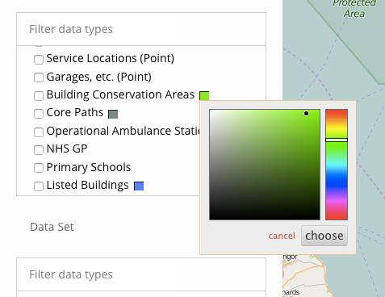
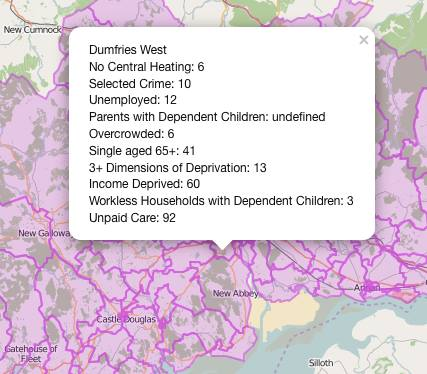
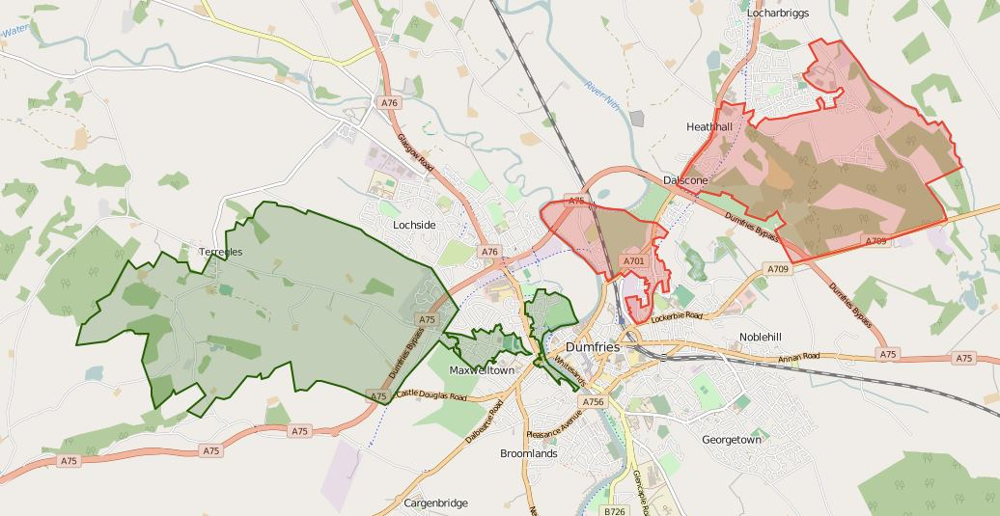
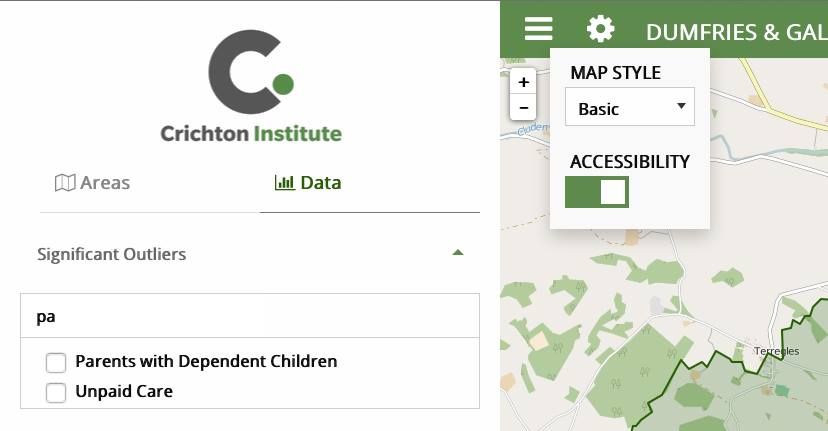

Select the layers you want to draw (and what colour you want to draw them in).

If you are drawing datazones, then you can select the information displayed ‘on-click’ using the box below

Under “Data”, you can display the datazones that are outliers in any metric you select

Toggle the sidebar, change the map style and enable accessibility features using the top bar
